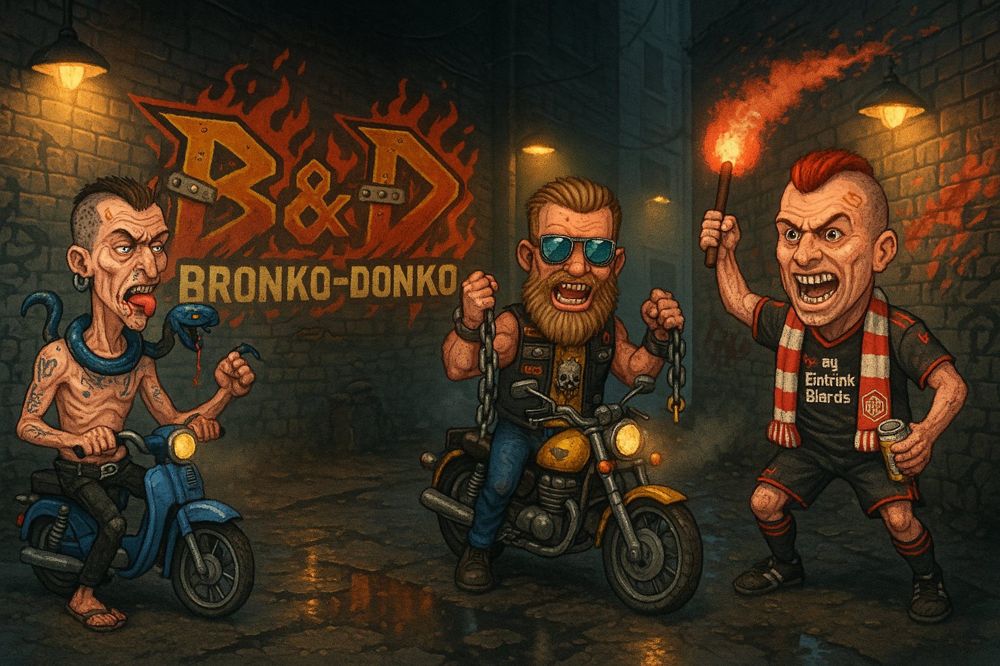
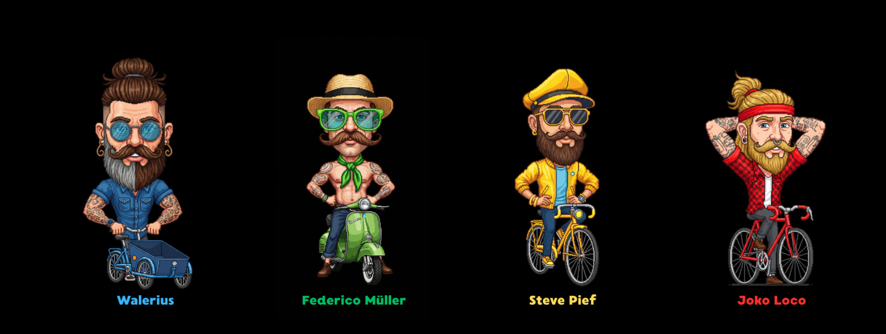
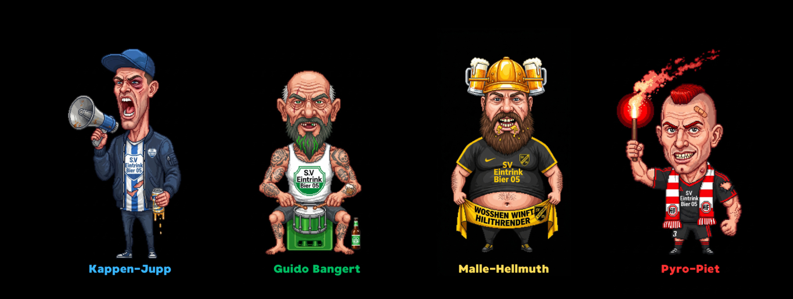
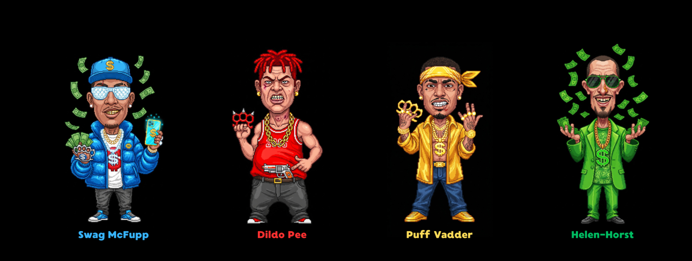
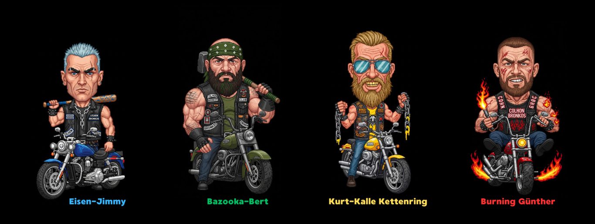

Die Donkos
Genetische Ausfälle, deren Deprivation in gewalttätiges, schmerzresistentes Verhalten kippt.

Bronko-Donko ist der derbe Nachfolger der Schulhof-Klassiker. Acht Gängs treffen sich am Hof, um den letzten verbliebenen Bronko-Orden auszuspielen. Wer am Ende noch steht, hat alles. Wer fällt, schuldet dem Donko-Haufen. Karten ausspielen, weghauen, ducken — und gewinnen, ohne die Faust zu heben.
Acht Truppen, acht Geschichten, ein Ziel: den Bronko-Orden holen.
Genetische Ausfälle, deren Deprivation in gewalttätiges, schmerzresistentes Verhalten kippt.

Bodensatz der Gesellschaft auf zwei Rädern. Motorrad-Gang, angetrieben von Selbsthass.

Wohlhabende Urbaniten auf der Jagd nach „authentischer, post-industrieller Gewalterfahrung".

Verkäufer, die Gewalt als Networking-Tool sehen und mitten im Kampf das Verkaufsgespräch halten.

Alkoholgespülte Sportclub-Mitglieder mit Schmerztoleranz jenseits jeder Vernunft.

Weibliche Spezialeinheit auf Rachefeldzug gegen das Patriarchat. Keine Gefangenen.

Dubai-affine Hustler, die ihre innere Leere in Gang-Gewalt kanalisieren.

Die alten Motorrad-Götter. Wer ihnen begegnet, hat den Hof schon verloren.
Erste Einzelgänger wurden in der Nähe des Hofes gesichtet.
Aus Wut geschmiedet, vor nichts in Acht — außer vor Mutters Anrufen wegen Pfandflaschen.
Ehemaliger Anarchist, kaputtgegangen am Banking. Kanalisiert seinen Groll auf der Straße.
Narkotika-Spezialist. Nutzt Drogen als Waffe und als Buße für eigene Verderbtheit.
Identitäts-Wandler. Sucht Wahrheit durch Gewalt und psychologische Auflösung.
Die ganzen Hofregeln — Spielvorbereitung, Ablauf, Abrechnung, fiese Tricks. Auch praktisch fürs Spiel am Tisch.
Hofregeln lesen ›